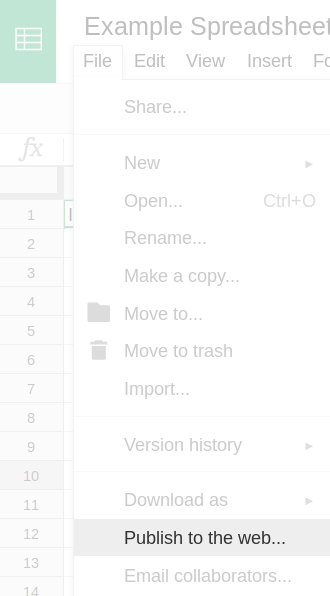
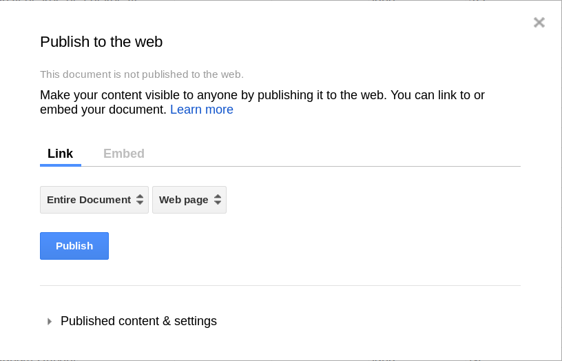

Build a new Google Spreadsheet using our template. You'll need to copy the template to your own Google Drive account by clicking the "Make a Copy" button.
Get the Spreadsheet TemplateNote: Don't change the column headers, don't remove any columns, and don't leave any blank rows in your spreadsheet.
Under the File menu, select “Publish to the Web.” 
In the next window, click the blue "publish" button. When asked, "Are you sure…?" click OK.

Close the 'Publish to the web' window. Copy the URL for your Timeline from the browser's address bar. It should look something like this:
https://docs.google.com/spreadsheets/d/1xuY4upIooEeszZ_lCmeNx24eSFWe0rHe9ZdqH2xqVNk/edit#gid=0
Disregard the URL that appears in the "publish to the web" window.
Copy/paste spreadsheet URL into the box below to generate your timeline. (Make sure you've published the spreadsheet.)
Visit